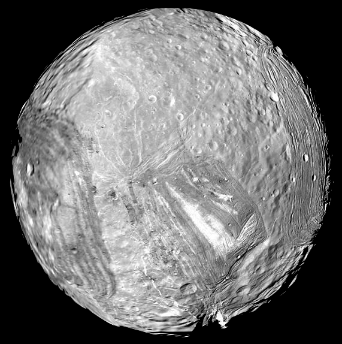
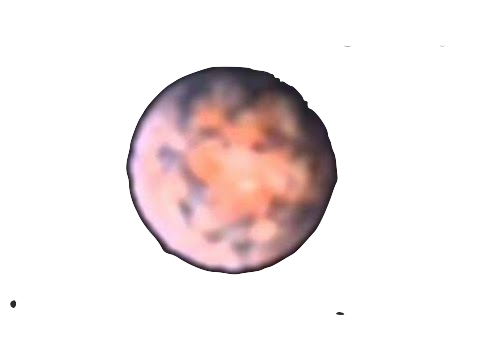
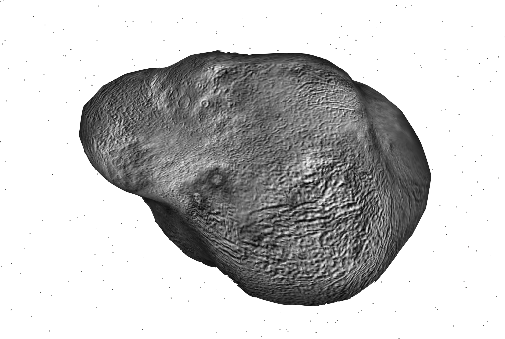

Uranus is the seventh planet from the Sun, and has the third-largest diameter in our solar system.
It was two years later that the object was universally accepted as a new planet, in part because of observations by astronomer Johann Elert Bode. Herschel tried unsuccessfully to name his discovery Georgium Sidus after King George III. Instead, the scientific community accepted Bode's suggestion to name it Uranus,as suggested by Bode.
Uranus' environment is not conducive to life as we know it. The temperatures, pressures, and materials that characterize this planet are most likely too extreme and volatile for organisms to adapt to.
With a radius of 15,759.2 miles (25,362 kilometers), Uranus is 4 times wider than Earth. If Earth was the size of a nickel, Uranus would be about as big as a softball. From an average distance of 1.8 billion miles (2.9 billion kilometers), Uranus is 19.8 astronomical units away from the Sun. One astronomical unit (abbreviated as AU), is the distance from the Sun to Earth. From this distance, it takes sunlight 2 hours and 40 minutes to travel from the Sun to Uranus.
As an ice giant, Uranus doesn’t have a true surface. The planet is mostly swirling fluids. While a spacecraft would have nowhere to land on Uranus, it wouldn’t be able to fly through its atmosphere unscathed either. The extreme pressures and temperatures would destroy a metal spacecraft.
Uranus has two sets of rings. The inner system of nine rings consists mostly of narrow, dark grey rings. There are two
outer rings: the innermost one is reddish like dusty rings elsewhere in the solar system, and the outer ring is blue like
Saturn's E ring.
In order of increasing distance from the planet, the rings are called Zeta, 6, 5, 4, Alpha, Beta, Eta, Gamma, Delta, Lambda,
Epsilon, Nu, and Mu. Some of the larger rings are surrounded by belts of fine dust.
Uranus has 27 known moons.All of Uranus' inner moons appear to be roughly half water ice and half rock. The composition of the outer moons remains unknown, but they are likely captured asteroids.
| Moon Name | information | photo |
|---|---|---|
| Miranda | .Miranda's orbit is slightly inclined. Of the five Uranian moons known before Voyager 2 visited the planet, Miranda is the smallest and closest to the planet. |  |
| Caliban | Caliban is the second-largest retrograde irregular satellite of Uranus. It was discovered on 6 September 1997 by Brett J. Gladman, Philip D. |  |
| Sycorax | Sycorax is the largest of the irregular moons which orbit Uranus in the opposite direction from the regular moons and the planet's rotation (known as a retrograde orbit). |  |